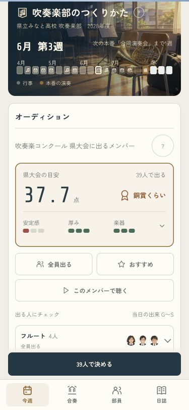
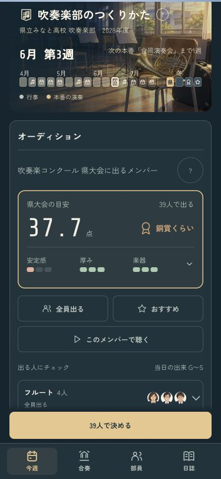
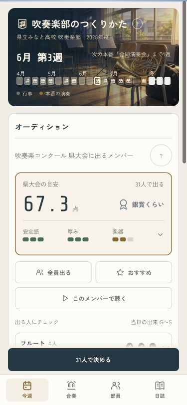
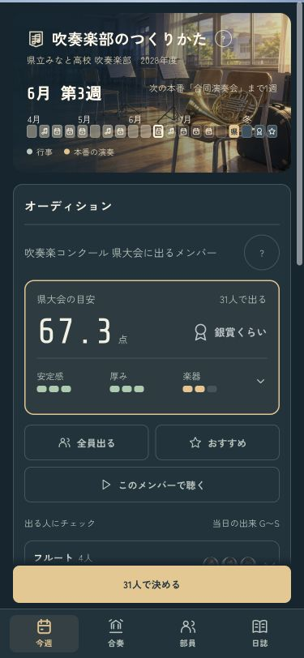
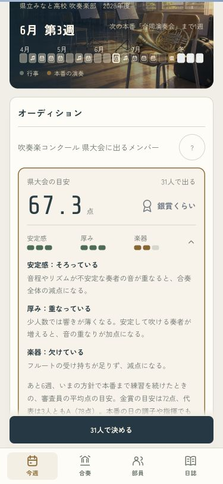
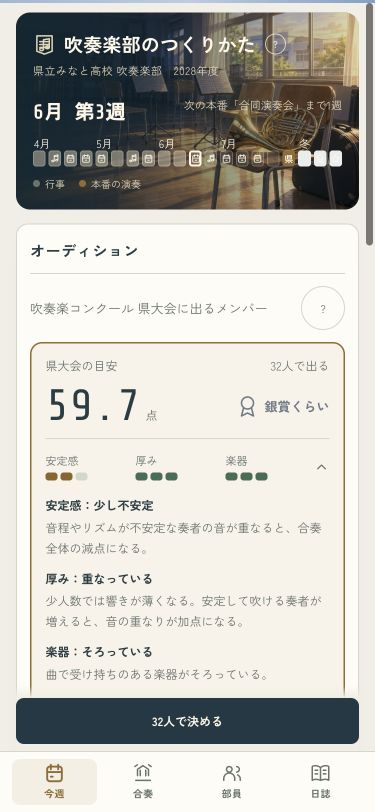

人選で、響きがどう変わるか
予想欄の「安定感・厚み・楽器」を見ながら、人選を見直せます。小さな印は色と数で区別。押すと理由が開きます。
確認用画面です。いつものセーブや設定を書き換えません。
全員で出る · 375px
この確認例では39人で37.7点。音は厚くても、不安定な奏者が重なるため安定感に注意が出ています。
ライト
ダーク
おすすめに変える · 375px
31人で67.3点。安定感が改善しても、フルートが欠ける注意は残ります。人数を減らせばいつでもよくなる、という表示にはしません。
ライト
ダーク
一人ずつの選択と、理由の説明
フルートを一人戻すと59.7点。この例では楽器の欠けを補う一方、安定感は少し下がります。説明と開いたパートを保ったまま選び直せます。
押して理由を見る
一人戻して見比べる
確認したこと
全15曲で、既存の採点結果と一致。課題曲がある年は、同じ採点用の分析を4割・6割で合わせます。部員の力・当日の出来・おすすめの選び方・採点式・保存形式は変えていません。個人の力はG〜Sです。
予想と本番の一致の記録 · 人選と厚みの確認 · 画面の確認記録